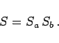
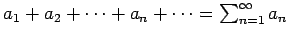
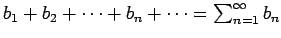

Inhalt Index DeskTop Bronstein

 Unendliche Reihen Reihen mit konstanten Gliedern Absolute und bedingte Konvergenz
Unendliche Reihen Reihen mit konstanten Gliedern Absolute und bedingte Konvergenz


|  | (7.35b) |
Wenn zwei Reihen  und  konvergent sind und wenigstens eine von ihnen absolut konvergiert, dann konvergiert auch die durch Multiplikation aus beiden erhaltene Reihe. Sie ist jedoch nicht notwendig ebenfalls absolut konvergent.